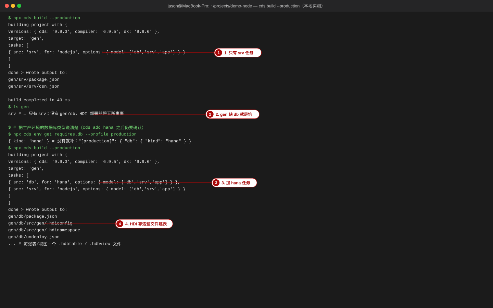
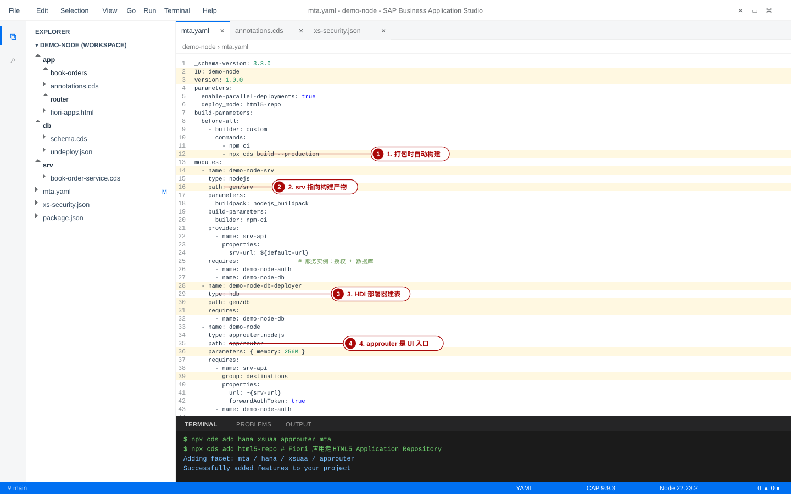
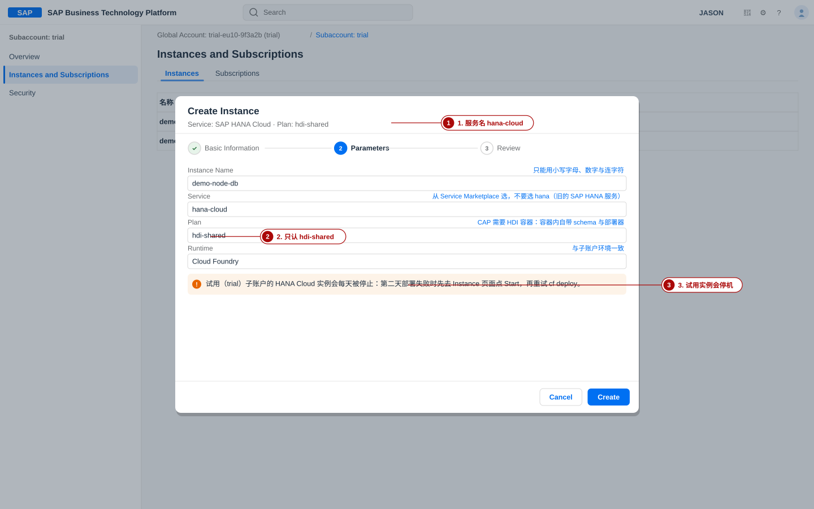
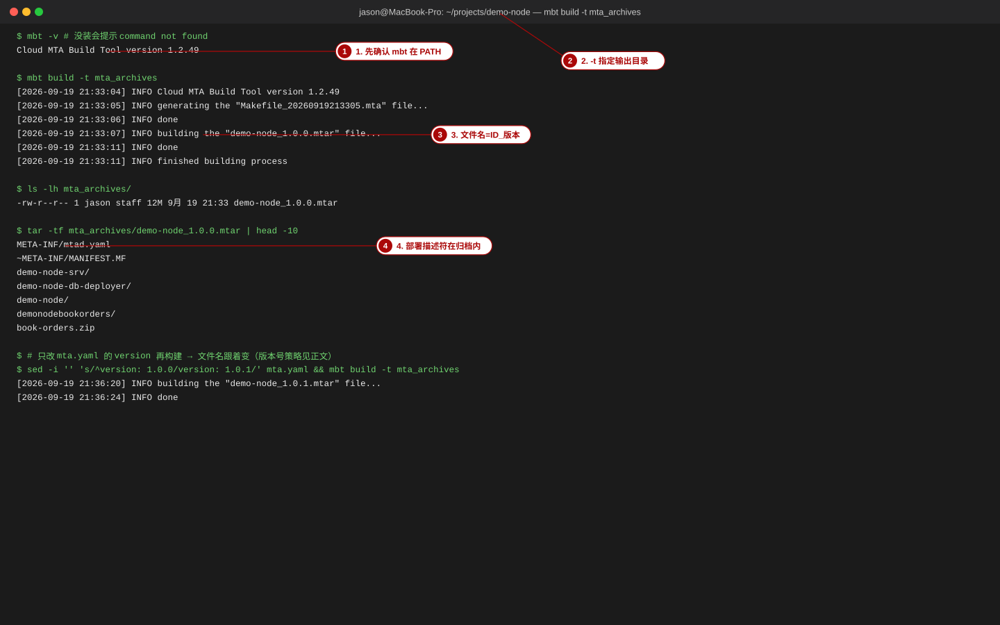
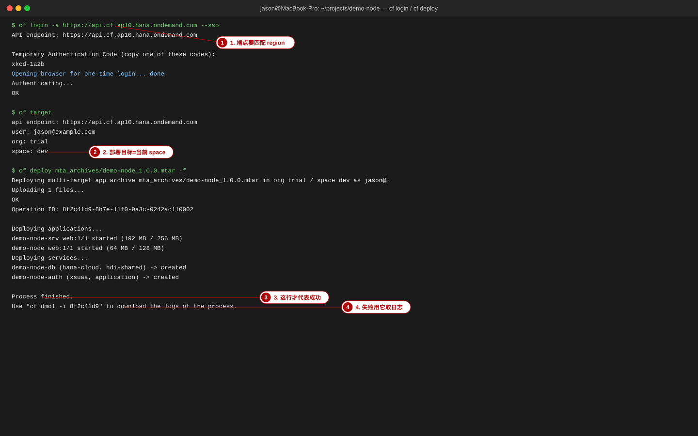
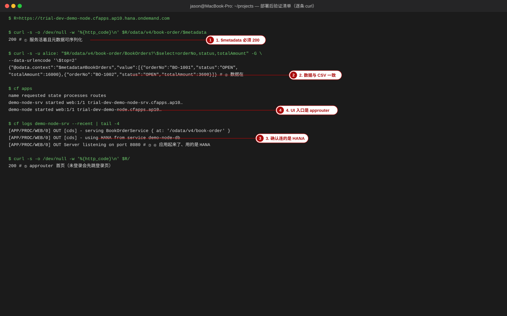
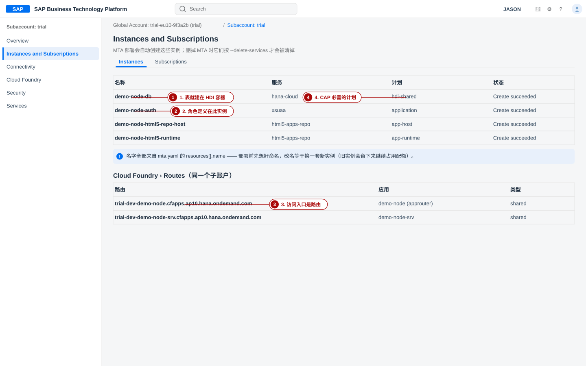

构建与部署：从本地到 Cloud Foundry
覆盖对象：cds build --production 的 gen/ 产物 · mta.yaml 的模块与资源 · xs-security.json · mbt build 与 .mtar · cf login --sso / cf target / cf deploy / cf dmol · 部署后验证清单 · GitHub Actions 的 CI/CD。本页的 cds build 与生成物输出都来自本站示范项目 project-code/demo-node 的本地实测；mbt、cf 的云端输出为「重绘」，图注里逐张标明。
- 说清
cds build --production为什么有时只生成gen/srv、有时还生成gen/db，以及「部署成功但没有表」的根因； - 读懂
mta.yaml里每一个模块与资源（srv / db-deployer / approuter / app-deployer / html5 / hana / xsuaa / html5-apps-repo），并能按需要改实例数、内存、计划； - 用
mbt build -t mta_archives打出.mtar，用tar -tf检查归档内容与版本号； - 用
cf login --sso→cf target→cf deploy完成一次真实部署，并逐条执行「部署后验证清单」； - 部署失败时用
cf dmol -i <operation ID>取日志定位到具体模块；更新与回滚都说得清（含--version-rule）； - 写一条能跑的 GitHub Actions 工作流（含 XSUAA 密码凭据），并解释为什么
--sso不能用在 CI 里。
环境：Node 22.23.2、@sap/cds 9.9.3、@sap/cds-dk 9.9.6。本页里本地实测的部分包括：cds build --production 的真实输出与 gen/ 目录树、cds add hana xsuaa approuter mta / cds add ui5 / cds add html5-repo 真实生成的 mta.yaml、app/router/*、app/book-orders/{package.json,ui5.yaml}、xs-security.json，以及各区域 CF API 端点的可达性。凡是没在本机实跑的（mbt build、cf 命令输出、BTP Cockpit 界面）都标「重绘」，并给出命令与参数的官方来源；不冒充实机截图或实跑输出。
0. 本页地图与部署链路
本地跑得通只是「在这台机器上跑得通」。部署要解决三件事：把代码变成可部署的产物（构建 + 打包）、把产物放到云上并建好它依赖的东西（应用 + 服务实例 + 数据库表）、证明它真的在工作（验证 + 日志）。CAP 把这条链路收敛成一条命令链：
--production → gen/ → mbt build
按 mta.yaml 打包 → .mtar → cf deploy
上传并编排 → HDI deployer
建表 / 建视图 → approuter
暴露 UI 与 OData
| 环节 | 谁在做 | 产物 / 结果 | 失败了看什么 |
|---|---|---|---|
| 构建 | cds build --production（由 mbt build 的 before-all 自动调用） | gen/srv（Node 服务 + 模型）、gen/db（HDI 建表制品） | gen/db 有没有生成（§1） |
| 打包 | mbt build | mta_archives/demo-node_1.0.0.mtar | mbt build 的 INFO 行与退出码（§3） |
| 部署编排 | cf deploy（multiapps 插件）+ MTA 部署服务 | 应用、服务实例、路由 | cf dmol -i <operation ID>（§6） |
| 建表 | demo-node-db-deployer（type: hdb，HDI deployer） | HANA 里出现 sap_training_bookorder_* 等表 | cf logs demo-node-db-deployer --recent |
| 对外暴露 | demo-node（approuter.nodejs） | https://<org>-<space>-demo-node.<landscape> | cf logs demo-node --recent + curl 路由 |
你能画出上面五个环节，并在每一步说出「产物是什么、失败时先看哪条日志」，后面的手顺就都只是填空了。最省事的路径（CAP 官方推荐）：cds up 一次完成「装依赖 → cds build → mbt build → cf deploy」，适合已经跑通一遍之后；第一次必须手动一步步来，因为你要看得见每一步的产物。
1. 构建：cds build 的产物与 profile 差异
cds build 做的事是「把 .cds 模型编译成目标平台能用的东西」。目标平台不同，产物不同；而选哪个目标，取决于运行 profile 下的配置——这是本节唯一需要记住的因果链。

1-1 期望中的产物长什么样
| 路径 | 内容 | 谁消费 |
|---|---|---|
gen/srv/ | Node.js 服务用的资源：package.json、srv/csn.json（编译后的模型）、服务实现文件、i18n 文件 | demo-node-srv 模块（path: gen/srv），部署后由 cds-serve 启动 |
gen/db/ | HDI 制品：.hdbtable / .hdbview / .hdbtabledata / .hdiconfig / .hdinamespace、undeploy.json、package.json | demo-node-db-deployer 模块（type: hdb，path: gen/db），由 HDI deployer 执行建表 |
gen/app/（启用 html5-repo 时） | 每个 Fiori 应用打包出的 <app>.zip，由 app-deployer 模块放进这个目录再上传 | demo-node-app-deployer 模块（type: com.sap.application.content） |
本站实测（cds build --production）的输出与目录树：
text$ npx cds build --production building project with { versions: { cds: '9.9.3', compiler: '6.9.5', dk: '9.9.6' }, target: 'gen', tasks: [ { src: 'srv', for: 'nodejs', options: { model: ['db','srv','app','app/*'] } } ] } done > wrote output to: gen/srv/package.json gen/srv/srv/csn.json build completed in 49 ms $ find gen -maxdepth 2 -type d gen gen/srv gen/srv/srv # ← 没有 gen/db：HDI 部署器将无事可做
1-2 profile 差异：为什么有时没有 gen/db
构建任务列表由「当前 profile 下解析出来的数据库类型」决定。开发环境默认是 SQLite（@cap-js/sqlite 在 devDependencies 里），所以本地跑 cds build 常常只编译 srv；要让 HDI 制品真的生成，必须让生产 profile 下解析出 db.kind = hana。本站实测的对照（同一个项目、只改一行配置）：
package.json 里的 cds.requires | 实测构建任务 | 实测产物 |
|---|---|---|
"[production]": { "auth": "xsuaa" }（只有授权） | 只 { src: 'srv', for: 'nodejs' } | gen/srv 只有服务；没有 gen/db |
"[production]": { "auth": "xsuaa", "db": { "kind": "hana" } } | { src: 'db', for: 'hana' } + { src: 'srv', for: 'nodejs' } | gen/db/package.json、gen/db/src/gen/.hdiconfig、.hdinamespace、*.hdbtable、gen/db/undeploy.json |
gen/db 缺目录 → demo-node-db-deployer 模块没有制品可部署 → 部署日志里它「成功完成」但什么都没建 → 服务起来后第一个查询报 no such table …。验证方式：find gen -maxdepth 2 -type d 必须同时看到 gen/db 与 gen/srv；再看 gen/db/src/gen/ 下有没有 *.hdbtable。
1-3 相关配置与 profile 的三种用法
| profile | 用途 | 典型配置位置 |
|---|---|---|
development（默认） | 本地开发：SQLite / 内存库、mocked 认证 | cds.requires.db.credentials.url: db.sqlite、cds.requires.auth.kind: mocked |
production | 构建与云端运行时：HANA + XSUAA | "[production]": { "auth": "xsuaa", "db": { "kind": "hana" } } |
hybrid | 本地进程连云端服务（cds bind 写入） | 由 cds bind 生成的私有配置段 |
- 动作：确认生产 profile 解析出的数据库类型与授权方式。
bash
cd project-code/demo-node npx cds env get requires.db --profile production # 期望 { kind: 'hana' } npx cds env get requires.auth --profile production # 期望 'xsuaa' - 动作：清理后重跑构建，核对两个目录都在。
bash
rm -rf gen && npx cds build --production find gen -maxdepth 2 -type d # 期望：gen/db 与 gen/srv 同时出现 ls gen/db/src/gen | head -5 # 期望：*.hdbtable / .hdiconfig / .hdinamespace - 验证：
gen/db/undeploy.json存在，内容默认是「不删除表」的清单（删表会导致数据丢失，官方明确警告）。
注意：不要把json[ "src/gen/**/*.hdbview", "src/gen/**/*.hdbindex", "src/gen/**/*.hdbconstraint", "src/gen/**/*_drafts.hdbtable", "src/gen/**/*.hdbcalculationview" ]hdbtable写进这个清单 —— HDI 部署默认「只增不删」，删表会让所有不在本次部署集里的表丢数据。
2. mta.yaml 逐段详解与 xs-security.json
mta.yaml 是部署描述符：它说清「有哪些模块（要跑的东西）」「有哪些资源（要建的服务实例）」，以及模块之间怎么绑定。不要手写第一版，用 cds add 生成后按需改。

2-1 生成整份描述符（本站实测的真实输出）
- 动作：按需一次性补齐 facet（顺序：先数据库/授权/路由，再加 UI 相关；UI 部分见 ⑨ Fiori UI §10）。
bash
cd project-code/demo-node npx cds add hana xsuaa approuter mta # 数据库 / 授权 / approuter / mta.yaml npx cds add ui5 # 声明 app/book-orders 是 UI5 工程 npx cds add html5-repo # UI 走 HTML5 Application Repository - 动作：生成物核对（本站实测的目录与文件）。
text
mta.yaml ← 部署描述符 xs-security.json ← XSUAA 的 scopes / role-templates（由 cds compile --to xsuaa 派生） app/router/package.json ← {"name":"approuter","dependencies":{"@sap/approuter":"^22.0.0"},"scripts":{"start":"node node_modules/@sap/approuter/approuter.js"}} app/router/xs-app.json ← 路由规则：^/(.*)$ → destination srv-api（csrfProtection: true） app/router/default-env.json app/book-orders/package.json · ui5.yaml ← Fiori 应用打包脚本（ui5-task-zipper） - 验证：
mta.yaml里应有 5 个模块与 4 个资源（本站实测数字）：demo-node-srv、demo-node-db-deployer、demo-node（approuter）、demo-node-app-deployer、demonodebookorders（html5）；资源是demo-node-auth、demo-node-db、demo-node-html5-repo-host、demo-node-html5-runtime。grep -c '^ - name:' mta.yaml
2-2 全文与逐段解释（本站项目真实生成物）
yaml_schema-version: 3.3.0 ID: demo-node version: 1.0.0 description: "A simple CAP project." parameters: enable-parallel-deployments: true deploy_mode: html5-repo build-parameters: before-all: - builder: custom commands: - npm ci - npx cds build --production modules: - name: demo-node-srv type: nodejs path: gen/srv parameters: instances: 1 buildpack: nodejs_buildpack build-parameters: builder: npm-ci provides: - name: srv-api properties: srv-url: ${default-url} requires: - name: demo-node-auth - name: demo-node-db - name: demo-node-db-deployer type: hdb path: gen/db parameters: buildpack: nodejs_buildpack requires: - name: demo-node-db - name: demo-node type: approuter.nodejs path: app/router parameters: keep-existing-routes: true disk-quota: 256M memory: 256M requires: - name: srv-api group: destinations properties: name: srv-api url: ~{srv-url} forwardAuthToken: true - name: demo-node-auth - name: demo-node-html5-runtime provides: - name: app-api properties: app-protocol: ${protocol} app-uri: ${default-uri} - name: demo-node-app-deployer type: com.sap.application.content path: gen build-parameters: build-result: app/ requires: - name: demonodebookorders artifacts: - book-orders.zip target-path: app/ requires: - name: demo-node-auth - name: srv-api - name: demo-node-html5-repo-host parameters: content-target: true config: HTML5Runtime_enabled: true - name: demonodebookorders type: html5 path: app/book-orders build-parameters: build-result: dist builder: custom commands: - npm ci - npm run build supported-platforms: [] resources: - name: demo-node-auth type: org.cloudfoundry.managed-service parameters: service: xsuaa service-plan: application path: ./xs-security.json config: xsappname: demo-node-${org}-${space} tenant-mode: dedicated oauth2-configuration: credential-types: - "binding-secret" - "x509" redirect-uris: - https://*~{app-api/app-uri}/** requires: - name: app-api - name: demo-node-db type: com.sap.xs.hdi-container parameters: service: hana service-plan: hdi-shared - name: demo-node-html5-repo-host type: org.cloudfoundry.managed-service parameters: service: html5-apps-repo service-plan: app-host - name: demo-node-html5-runtime type: org.cloudfoundry.managed-service parameters: service: html5-apps-repo service-plan: app-runtime
| 段落 | 含义 | 改它会发生什么 |
|---|---|---|
_schema-version | MTA 描述符的语法版本 | 别动；3.3.0 是当前生成值 |
ID / version | MTA 的名字与版本 | 决定 .mtar 文件名（ID_version.mtar）与部署时的版本判断（§3、§10） |
parameters.enable-parallel-deployments | 允许模块并行部署 | 关掉会明显变慢（默认开） |
parameters.deploy_mode: html5-repo | 声明 UI 走 HTML5 仓库 | 由 cds add html5-repo 写入；删掉后 app-deployer / html5 模块失去意义 |
build-parameters.before-all | 打包前先跑的命令 | 这就是 mbt build 会自动执行 npm ci + cds build --production 的地方；手工指定的构建步骤要加在这里，否则部署出来的还是旧产物 |
modules[].type: nodejspath: gen/srv | srv 模块：Node.js 应用，代码取构建产物 | 把 instances 调大 = 多实例（注意会话/草稿锁仍只在数据库层共享）；buildpack: nodejs_buildpack 指定运行时 |
build-parameters.builder: npm-ci | srv 模块在打包阶段执行 npm ci，把依赖装进归档 | 没有它，云端启动会缺依赖（Node.js 构建包也可以在云上装依赖，但把依赖打进 .mtar 更可控） |
provides: srv-api + srv-url: ${default-url} | 把本模块的 URL 作为「提供物」暴露给别的模块 | approuter 通过 ~{srv-url} 引用它 —— 不要手写 URL，每次部署域名都可能变；keep-existing-routes: true 会尽量保留已有路由 |
modules[].type: hdb | HDI 部署器模块（db-deployer） | 它只做一件事：把 gen/db 里的制品推到 HDI 容器。gen/db 缺失时它能「成功」但什么也不建 |
modules[].type: approuter.nodejspath: app/router | 应用路由：UI 与 OData 的唯一入口 | requires 里的 group: destinations 就是给它配置 destination（名字 srv-api 必须与 xs-app.json 里写的一致）；forwardAuthToken: true 把用户令牌转给 srv，服务里 req.user 才有值 |
type: com.sap.application.content | 内容部署器：把 book-orders.zip 上传到 HTML5 仓库 | build-result: app/ 与上面的 artifacts: book-orders.zip 必须和 ui5.yaml 的 archiveName 一致（⑨ §10 有本页真实生成物） |
type: html5 | Fiori 应用的构建模块 | 命令是 npm ci && npm run build；若 app/book-orders/package.json 没有 build 脚本，这里会以 Missing script: "build" 失败 |
resources[].type: com.sap.xs.hdi-containerservice: hana / service-plan: hdi-shared | HANA 上的 HDI 容器 | CAP 必须用 hdi-shared（schema、tools 等计划不能让 HDI deployer 建表）；换计划 = 换容器 = 表全没了 |
resources[].type: org.cloudfoundry.managed-serviceservice: xsuaa | 授权实例，参数来自 xs-security.json | xsappname 用 ${org}/${space} 占位，保证同一子账户不同 space 不冲突；tenant-mode: dedicated 是单租户 |
html5-apps-repo 的 app-host / app-runtime | UI 内容的存储与运行时 | 两个计划的角色不同：app-host 接收上传（给 app-deployer），app-runtime 在运行时被 approuter 访问 |
2-3 xs-security.json：scopes 与 role-templates 是从哪来的
这个文件不是手写的，是从模型里的授权注解派生出来的：cds compile --to xsuaa 会把 @requires / @restrict 里的角色翻译成 scopes 与 role-templates。本站示范项目只有一个 @requires: 'authenticated-user'（内置角色，不产生 scope），所以实测生成的是三个空数组：
json// 本站示范项目：cds compile srv --to xsuaa 的真实输出 { "scopes": [], "attributes": [], "role-templates": [] }
一旦模型里出现自定义角色，输出就会长出对应条目。本站实测：给服务加 annotate BookOrderService with @(requires: ['bookorder-admin']) 后再编译，得到：
json{ "scopes": [ { "name": "$XSAPPNAME.bookorder-admin", "description": "bookorder-admin" } ], "attributes": [], "role-templates": [ { "name": "bookorder-admin", "description": "generated", "scope-references": ["$XSAPPNAME.bookorder-admin"], "attribute-references": [] } ] }
- 模型里改了
@requires/@restrict→ 重新跑cds compile --to xsuaa（或直接用cds add xsuaa重新生成）→ 再部署。只改模型不重新生成，云上的 scope 与模型对不上，症状是「接口 403，但角色集合看起来都给了」。 - scope 名里的
$XSAPPNAME是占位符，运行时替换成实例的xsappname（本站demo-node-${org}-${space}）。 - role-template 只是「模板」，用户要到子账户里通过角色集合（role collection）才能拿到权限；MTA 里可以顺带生成角色集合（生成的
config.role-collections段落），也可以手工在 Cockpit 里建。
2-4 另一种做法：手动建实例再让 MTA 绑定
MTA 会自动创建资源（resources 段落），这也是推荐做法。但有时你想先手工建好实例（例如试用账号里 HANA 要提前启动、或者要复用已有容器），此时在子账户里建实例必须选对服务与计划：

| 资源用途 | 服务 | 计划 | 备注 |
|---|---|---|---|
| HANA 数据库 | hana-cloud | hdi-shared | CAP 必需；schema/tools 不能用于 HDI 部署 |
| 授权 | xsuaa | application | 参数文件 ./xs-security.json；broker/application 两种计划，CAP 用后者 |
| UI 内容 | html5-apps-repo | app-host + app-runtime | 两个实例（两个计划），app-deployer 用 host，approuter 运行时用 runtime |
| UI 路由 | 不需要额外实例 | — | approuter 是随应用部署的一个 Node.js 模块（app/router/） |
3. 手顺：mbt build 打出 .mtar
3-1 安装 MTA Build Tool：npm 还是 brew
| 方式 | 命令 | 实际差异 |
|---|---|---|
| npm（官方文档推荐，跨平台一致） | npm i -g mbt | 装的是 Node 包装层，首次运行会按平台取对应二进制；CI 里最方便；卸载用 npm rm -g mbt |
| Homebrew（macOS） | brew install mbt | 装的是编译好的原生二进制（本机核对：brew info mbt 显示 stable 1.2.49 (bottled)），版本由 formula 维护；升级靠 brew upgrade，与 npm 装的那份互不干扰（PATH 里谁在前用谁） |
| 手工下载二进制 | 从 release 页取对应平台压缩包，解压后把 mbt 放进 /usr/local/bin | 无包管理器环境（内网机器）使用；Windows 还需要 GNU Make |
- 动作：装好后确认在 PATH 里。
bash
mbt -v # 期望：Cloud MTA Build Tool version 1.2.x cf -v # 期望：cf version 8.x（MTA 部署要求 8 以上） - 验证：两条命令都有版本输出。少任何一条，后面的手顺都会在第一步就失败（
command not found）。
3-2 打包与检查

- 动作：在项目根目录打包（
-t指定输出目录，默认就是mta_archives）。
关键点：bashcd project-code/demo-node mbt build -t mta_archives # 想指定文件名：mbt build -t mta_archives --mtar demo-node_1.0.0.mtar # 想指定平台：mbt build -p cf（默认就是 cf；可选 neo / xsa）mbt build会先执行mta.yaml里build-parameters.before-all的两条命令（npm ci与npx cds build --production），再逐个构建模块。所以「忘记先 cds build」不会出错，但「改了模型没重新打包」会部署出旧产物。 - 动作：检查归档内容（不看内容就上传，等于把问题交给云端）。
bash
ls -lh mta_archives/ tar -tf mta_archives/demo-node_1.0.0.mtar | head -8 # META-INF/mtad.yaml ← 部署描述符（由 mta.yaml 转换而来） # ~META-INF/MANIFEST.MF # demo-node-srv/ ← srv 模块（已含 node_modules） # demo-node-db-deployer/ # demo-node/ ← approuter # book-orders.zip ← Fiori 应用包（有 html5-repo 时） - 验证：
META-INF/mtad.yaml存在，且模块数量与mta.yaml一致；启用了 UI 时要能看到book-orders.zip。归档大小也是判据：几 MB（只含 srv）和几十 MB（含 node_modules）完全不同，前者往往说明依赖没打进去。
3-3 版本号策略
version与ID共同决定文件名与部署版本；同一个版本号重复部署要加-f（见 §4），否则会因「已存在」被拒；- 人工部署阶段用
1.0.x递增即可；进入 CI 后建议用「语义版本 + 构建号」，例如在流水线里改写version: 1.0.0-${GITHUB_RUN_NUMBER}； - 不要用时间戳当版本：MTA 的版本比较按语义版本规则，时间戳会让
--version-rule HIGHER的行为难以预测； - 版本号写在
mta.yaml（version:）与MTA 部署服务的记录里；回滚时靠的是「重新部署旧版本」而不是云端快照（§6）。
4. 手顺：cf login / target / deploy
4-1 登录：--sso 与 API 端点
bash# 1) 装 MTA 插件（只需一次） cf add-plugin-repo CF-Community https://plugins.cloudfoundry.org cf install-plugin -f multiapps # 2) 登录：--sso 打开浏览器做单点登录（推荐；不用把密码写进终端历史） cf login -a https://api.cf.ap10.hana.ondemand.com --sso # 3) 确认目标 cf target
| region 代号 | API 端点（实测可达） | 地理含义（~ 以子账户创建时选的 region 为准） |
|---|---|---|
eu10 | https://api.cf.eu10.hana.ondemand.com | ~ 欧洲（法兰克福） |
eu20 | https://api.cf.eu20.hana.ondemand.com | ~ 欧洲（荷兰） |
us10 | https://api.cf.us10.hana.ondemand.com | ~ 美东 |
us20 / us21 | https://api.cf.us20.hana.ondemand.com | ~ 美西 / 美东（备用区域代号） |
ap10 / ap11 / ap12 | https://api.cf.ap10.hana.ondemand.com | ~ 亚太（新加坡一带） |
ap20 / ap21 | https://api.cf.ap20.hana.ondemand.com | ~ 亚太（澳大利亚一带） |
jp10 / jp20 | https://api.cf.jp10.hana.ondemand.com | ~ 日本 |
br10 / br20 | https://api.cf.br10.hana.ondemand.com | ~ 南美（巴西） |
端点和子账户的 region 是绑定的：cf login -a 写错 region，症状是「登录成功但看不到自己的 org」或 cf target 里没有目标空间。本站对上面这些端点做过可达性实测（GET https://api.cf.<region>.hana.ondemand.com/v2/info 返回 200，响应 description 为 SAP BTP Cloud Foundry environment）；中国区的端点使用不同域名，不在上表。要确认自己的端点：Cockpit 里子账户 Overview 会给出 Cloud Foundry 的 API Endpoint。

4-2 cf deploy：参数逐个解释
| 写法 | 作用 | 什么时候用 |
|---|---|---|
cf deploy mta_archives/demo-node_1.0.0.mtar | 部署（= 新建或增量同步已有 MTA） | 常规部署 |
-f（--force） | 强制部署，不再询问是否中止冲突中的操作（例如上一个部署还在跑，或同版本已存在） | 重复部署同一版本、上一次部署卡住需要抢占时 |
--version-rule HIGHER | SAME_HIGHER | ALL | 版本规则：只部署更高版本 / 同版本或更高 / 任意版本 | 回滚或强制重部署时用 ALL；正常流水线用默认 |
-e <扩展描述符> | 用 MTA 扩展文件覆盖参数（例如只改实例数、内存） | 同一份归档部署到多环境（dev/test/prod） |
-m <模块名> / -r <资源名> | 只部署指定模块 / 资源 | 只重推 srv、或只重建某个服务实例 |
--no-start | 部署但不启动应用 | 先建服务与表，再统一启动 |
--strategy（如 blue-green 相关） | 部署策略：逐个替换或蓝绿 | 要求零停机的场景（另一条命令是 cf bg-deploy） |
cf undeploy demo-node -f --delete-services | 卸载 MTA（可顺带删除服务实例） | 清理环境（§9） |
- 上传与校验：
Uploading 1 files...→OK，然后给出Operation ID（记住它，出问题就靠它取日志）； - 应用与服务：
Deploying applications...与Deploying services...两段，逐行显示started/created； - 结束语：
Process finished.这一行才是成功。看到Use "cf dmol -i <operation ID>" to download the logs of the process.说明可以取全量日志； - 失败时：出现
Error/Process has failed，此时不要立刻重试，先按 §6 取日志。
4-3 用三条命令确认部署结果
bashcf apps # 应用与状态（requested state / processes / routes） cf services # 已创建的服务实例与新绑定关系 cf logs demo-node-srv --recent | tail -20 # 应用启动日志（看 CDS 起了哪个服务、连的哪个库） cf marketplace -e hana-cloud # 需要确认 HANA 计划时（hdi-shared 必须出现在列表里）
5. 部署后验证清单
部署成功 ≠ 系统可用。下面五条是「从外到里」的验收顺序，每条都要有可观察的证据；只跑一条就宣布成功，是初学者最常见的坑。

- ① 路由可达 + 元数据可用：curl -s -o /dev/null -w '%{http_code}' https://<org>-<space>-demo-node.<landscape>/odata/v4/book-order/$metadata → 200（未登录时可能是 401，说明认证在生效，也算通过这一层）。
- ② 能取到数据：curl -u <user>: -G ".../BookOrders" --data-urlencode '$top=2' → 返回
BO-1001等行，且totalAmount=16000（与本地 CSV 初始值一致 —— 这一条同时验证了「表建好了」与「数据导入成功」）。 - ③ HANA 里表真的建好了：两种看法之一 —— (a) HANA Cloud 的 Database Explorer / SQL Console 里查
sap_training_bookorder_BOOK_ORDERS之类的表名（schema 属于该 HDI 容器）；(b)cf logs demo-node-db-deployer --recent的最后几行显示部署成功。 - ④ 应用与路由状态正确：cf apps 里
demo-node-srv与demo-node（approuter）都是started，各 1 个进程；路由域名符合<org>-<space>-<app>规则。 - ⑤ Fiori 页面能打开：浏览器打开 approuter 根地址 → 若出现 XSUAA 登录页说明授权链路正常；登录后能看到订单列表（这一步同时验证了
html5-apps-repo、app-deployer 与forwardAuthToken）。
bash# 一条命令跑完 ①②（把 R 换成自己的路由） R=https://trial-dev-demo-node.cfapps.ap10.hana.ondemand.com curl -s -o /dev/null -w 'metadata %{http_code}\n' "$R/odata/v4/book-order/\$metadata" curl -s -u alice: -G "$R/odata/v4/book-order/BookOrders" \ --data-urlencode '$select=orderNo,status,totalAmount' --data-urlencode '$top=2' # ③④ 云端状态 cf apps cf logs demo-node-srv --recent | tail -5 # 期望能看到： serving BookOrderService { at: '/odata/v4/book-order' } 与 using HANA from service demo-node-db

- 先看
gen/db有没有生成（§1）—— 这是最常见的根因，本地就能查，不用上云； - 再看
cf logs demo-node-db-deployer --recent：如果这里报错，说明制品有但部署失败（权限、容器被别的实例占用、CSV 格式错）； - 最后看 srv 日志里的
no such table …或using HANA from service …：后者说明连库正常，前者说明表没建。
6. 更新、回滚、多版本与取日志
6-1 更新：正常迭代怎么做
- 动作：改完代码后提升版本号（
mta.yaml的version:），重新打包。bashnpx cds build --production mbt build -t mta_archives cf deploy mta_archives/demo-node_1.0.1.mtar - 验证：部署过程中会看到
Deploying applications...里显示新旧实例替换（先起新实例再停旧实例，滚动替换）；完成后cf apps的processes仍是web:1/1，路由不变。做得好的话用户无感。
6-2 回滚：重新部署旧版本
Cloud Foundry 的 MTA 部署是声明式同步：它把云端状态对齐到归档，而不是保存快照。回滚的做法是按旧版本号重新打包、重新部署。因此两个实践很重要：
- 保留每个版本的
.mtar（CI 里作为构建产物上传），回滚时直接部署旧归档； - 数据库回滚是另一件事：HDI 默认「只增不删」（
undeploy.json里没有hdbtable），所以「回滚应用」通常能成功，但「回滚表结构」需要自己写迁移（删列、改类型都不会自动发生）。这也是为什么 schema 变更要尽量向后兼容：先加新列、双写，再切换，最后清理旧列。
强制重部署同一版本时，用 -f 与更宽松的版本规则：cf deploy mta_archives/demo-node_1.0.0.mtar -f --version-rule ALL
6-3 多版本 MTA 与操作记录
| 命令 | 作用 | 典型用途 |
|---|---|---|
cf mtas | 列出当前 space 里所有 MTA 及其版本 | 确认线上到底跑的是哪个版本 |
cf mta demo-node | 看某个 MTA 的健康与状态 | 排查「部署过了但状态不对」 |
cf mta-ops | 列出进行中/最近的操作 | 找到那个卡住的 deployment 并拿 Operation ID |
cf deploy -i <operation ID> -a monitor|abort|retry|resume | 对一个进行中的操作继续监视 / 中止 / 重试 / 继续 | 操作被网络中断后的补救（不用重新上传） |
cf bg-deploy mta_archives/…mtar | 蓝绿部署：新版本起好后再切流量，可暂停验证再提交 | 要求零停机的上线 |
6-4 部署失败时怎么取日志（cf dmol）
- 动作：用 Operation ID 下载整份操作的日志（
-d指定目录，默认当前目录）。bashcf dmol -i 8f2c41d9-6b7e-11f0-9a3c-0242ac110002 -d mta-logs ls mta-logs # 每个模块/资源一份日志文件 # 不知道 operation ID 时： cf mta-ops # 也可以按 MTA 取最近若干次的操作日志： cf dmol --mta demo-node --last 3 -d mta-logs - 验证：目录里能看到各模块的日志；先看失败模块那一份（文件名里带模块名），再看它的最后 30 行 —— 云端错误信息通常非常具体（构建包报错、内存不足、服务创建失败）。
- 动作：如果失败在应用启动阶段，改用应用日志（更实时）。
bash
cf logs demo-node-srv --recent | tail -40 cf logs demo-node-db-deployer --recent | tail -40 cf logs demo-node-app-deployer --recent | tail -20 # UI 上传失败看这个
7. CI/CD：GitHub Actions 与 --sso 的冲突
7-1 为什么 --sso 不能进流水线
- 它要交互：
--sso先在终端打印一次性验证码、再打开浏览器完成单点登录。CI runner 上没有浏览器，也没有人能点确认； - 验证码有效期很短（几分钟），就算把代码硬塞进去也会过期；
- 即便用
--sso-passcode，一次性码也无法自动续期，下一次流水线又要人工介入 —— 那就不是 CI 了。
正确做法：为流水线建一个技术用户（platform user），把用户名放明文变量、密码放 Secret，用 cf login -u … -p … 登录；或者让 CAP 官方动作 cap-js/cf-setup@v2 代为完成「装 CF CLI + MTA 插件 + 登录」。权限上给这个用户只够部署的角色（如 Space Developer），不要给全局管理员。
7-2 CAP 自带的工作流（先看生成物）
npx cds add github-actions 会生成 .github/workflows/ 下的一套工作流（含 cf.yaml、test.yaml、release.yaml）。本站核对过该模板的结构，关键几行是：
yaml# .github/workflows/cf.yaml（cds add github-actions 生成的骨架，节选） env: APP_NAME: demo-node jobs: deploy: runs-on: ubuntu-latest steps: - uses: actions/checkout@v5 - uses: actions/setup-node@v5 with: node-version: 22 - uses: cap-js/cf-setup@v2 # 装 CF CLI + MTA 插件并登录 with: api: ${{ vars.CF_API }} org: ${{ vars.CF_ORG }} space: ${{ vars.CF_SPACE }} username: ${{ vars.CF_USERNAME }} password: ${{ secrets.CF_PASSWORD }} - run: npm install - run: npx cds up # 装依赖 + cds build + mbt build + cf deploy - run: cf logs "${{ env.APP_NAME }}-srv" --recent if: always() # 失败也要打印日志，方便排查
7-3 显式版工作流（每一步都看得见）
学习与排错阶段建议用「显式版」：把构建与部署拆开，失败时一眼看出是哪一步。下面这份工作流与 §3/§4 的手顺一一对应：
yamlname: Deploy to Cloud Foundry on: push: branches: [ main ] workflow_dispatch: # 允许手工触发，便于验证凭据 permissions: contents: read concurrency: # 同分支只允许一个部署在跑 group: cf-demo-node-${{ github.ref }} cancel-in-progress: false env: APP_NAME: demo-node jobs: deploy: runs-on: ubuntu-latest steps: - uses: actions/checkout@v5 - uses: actions/setup-node@v5 with: node-version: 22 cache: npm - name: 安装依赖（冻结版本） run: npm ci - name: 构建（cds build --production） run: npx cds build --production - name: 校验构建产物（缺 gen/db 就直接失败） run: | test -d gen/srv || { echo "缺少 gen/srv"; exit 1; } test -d gen/db || { echo "缺少 gen/db：检查 [production].db.kind"; exit 1; } - name: 打包 .mtar run: | npm i -g mbt mbt build -t mta_archives - uses: cap-js/cf-setup@v2 # 装 CF CLI + multiapps 插件并登录（不用 --sso） with: api: ${{ vars.CF_API }} # 变量：https://api.cf.ap10.hana.ondemand.com org: ${{ vars.CF_ORG }} space: ${{ vars.CF_SPACE }} username: ${{ vars.CF_USERNAME }} password: ${{ secrets.CF_PASSWORD }} - name: 部署 run: cf deploy mta_archives/demo-node_1.0.0.mtar -f - name: 失败时打印日志 if: always() run: | cf logs "${APP_NAME}-srv" --recent || true cf logs "${APP_NAME}-db-deployer" --recent || true
| 要准备的变量 / 密钥 | 放哪 | 例子 |
|---|---|---|
CF_API | Repository variables | https://api.cf.ap10.hana.ondemand.com（与 region 一致） |
CF_ORG / CF_SPACE | Repository variables | trial / dev |
CF_USERNAME | Repository variables | 技术用户的邮箱 |
CF_PASSWORD | Secret（不要用变量） | 技术用户密码；定期轮换 |
- 把「gen/db 是否存在」写成门禁（上面那段
test -d）：这是最能提前拦住「部署成功但没有表」的一行； - 版本号由流水线注入（如
1.0.0-${GITHUB_RUN_NUMBER}），避免「同一个版本号重复部署」； - 流水线里不要跑
cds deploy --to sqlite之外的数据准备：测试数据用cds.test/内存库，云端初始数据只走db/data/*.csv（HDI 部署时自动导入）。
8. 常见错误表（14 条）
| 错误 / 症状 | 原因 | 处理与验证 |
|---|---|---|
Invalid MTA Archive / 归档校验失败 | .mtar 不完整或被手工改过；mta.yaml 语法错（缩进、缺冒号） | 重新 mbt build；用 tar -tf 确认 META-INF/mtad.yaml 在；mta.yaml 用 YAML 校验器过一遍 |
No such app / 找不到应用 | 部署到了错误的 space、或应用名与 mta.yaml 里的 modules[].name 不一致 | cf target 确认 org/space；cf apps 看真实名字（本站是 demo-node-srv / demo-node） |
HDI container is already bound to another application / 容器已被绑定 | 同一个 HDI 实例被两个应用绑定（典型：手工建的实例又被 MTA 引用） | 一个 HDI 容器只服务一个应用；要么在 mta.yaml 里让它自己建，要么先解绑旧应用（cf unbind-service） |
内存超配额（You have exceeded your organization's memory limit） | 试用账号内存配额有限（常见 4 GB），旧应用没删就部署新版本 | cf apps 看内存占用；删掉不用的应用（cf delete）或调小 parameters.memory；cf scale demo-node-srv -m 256M |
| approuter 404（根地址打不开） | approuter 起来了但没找到 welcomeFile；或 UI 没上传到 HTML5 仓库；或 xs-app.json 路由与 destination 名字不匹配 | 看 app/router/xs-app.json 与 mta.yaml 里 destinations.name 是否都是 srv-api；看 cf logs demo-node-app-deployer --recent |
| 部署成功但表为空 / 表不存在 | gen/db 没生成（生产 profile 里 db.kind 不是 hana）；或 db-deployer 失败 | 本地 find gen -maxdepth 2 -type d 必须有 gen/db；再查 cf logs demo-node-db-deployer --recent（§1、§5） |
| xsuaa 角色没生效 / 接口 403 | 模型里改了 @requires 但没重新生成 xs-security.json；或用户的角色集合没分配 | cds compile --to xsuaa 重新生成后重新部署；在 Cockpit 的 Role Collections 里把角色集合分配给用户（重新登录后生效） |
| org / space 不对（部署到了别处） | 终端里保留了上一次 cf target，与预期不符 | 每次部署前 cf target；脚本里显式 cf target -o trial -s dev；CI 里用 cap-js/cf-setup 的 org/space 输入 |
路由被占用（Route ... is already in use） | 同名路由已绑定到另一个应用（常见于换了 MTA 名但保留旧路由） | cf routes 找到占用者：删旧应用或 cf unmap-route；keep-existing-routes: true 也可能导致新旧共用 |
版本号重复（MTA with the same version already exists） | 用同一个 version 重复部署 | 提高 mta.yaml 的 version；或 cf deploy … -f --version-rule ALL 强制覆盖 |
| cf API endpoint 与 region 不一致 | cf login -a 用错了 region 端点（或子账户在别的 region） | 用 Cockpit Overview 里给出的 API Endpoint；对照 §4-1 表；cf api 可随时查看/切换当前端点 |
| 试用账号的实例被停（HANA 每天停） | 试用子账户的 HANA Cloud 实例会按天停止，第二天部署/查询失败 | 先在 Cockpit 的 Instances 里点 Start（等几分钟状态变成 Running），再重试部署；这也是「部署失败先看实例状态」的原因 |
Missing script: "build"（打包阶段） | cds add html5-repo 在 cds add ui5 之前执行，Fiori 应用的 package.json 没有 build 脚本（详见 ⑨ §10） | 按正确顺序重跑 cds add ui5 → cds add html5-repo；验证 app/book-orders/package.json 里有 "build": "ui5 build preload --clean-dest" |
mbt: command not found / make: command not found（Windows） | MBT 未安装；或 Windows 上缺少 GNU Make | npm i -g mbt（或 brew install mbt）；Windows 额外装 GNU Make（MBT 在打包阶段会调用它） |
9. 发布后的运维与资源清理
9-1 日常运维三条线
| 线 | 看什么 | 怎么做 |
|---|---|---|
| 日志 | 应用 stdout/stderr（CDS 启动信息、请求日志、错误栈） | cf logs <app> --recent 看最近；cf logs <app> 跟随；长期留存接 Application Logging / 日志服务（试用账号配额有限） |
| 指标 / 健康 | 实例数与内存/CPU、启动失败次数、路由响应 | cf app demo-node-srv 看用量；cf apps 看 started/crashed；生产建议加健康检查端点（CAP 提供 /health 之类的能力，按需配置） |
| 成本 / 配额 | 内存总量、服务实例数、HANA 实例规格 | 试用账号：内存约 4 GB、30 天有效期；正式账号：HANA 实例是主要成本项，不用时停掉或删除；用 cf apps + Cockpit 的 Quota 页核对 |
9-2 清理资源（顺序很重要）
- 动作：先卸载 MTA。这一步会删掉它创建的应用与路由；加
--delete-services会连服务实例一起删（数据库内容随之消失，确认后再加）。bashcf mtas # 先看清要删的是哪个、哪个版本 cf undeploy demo-node -f # 只删应用/路由，保留服务实例 cf undeploy demo-node -f --delete-services # 连服务实例一起删（数据会丢） - 验证：cf apps 里不再有
demo-node*；cf mtas 里不再有该 MTA。 - 动作：如果实例是自己手工建的（或 MTA 没带
--delete-services），逐个删。先解绑再删：绑着应用的服务实例删不掉。bashcf services # 看实例与绑定关系 cf unbind-service <app> <service-instance> # 需要时先解绑 cf delete-service demo-node-db -f # 删 HANA 容器（数据一起删） cf delete-service demo-node-auth -f # 删 XSUAA 实例 cf delete-service demo-node-html5-repo-host -f cf delete-service demo-node-html5-runtime -f - 验证：cf services 列表为空（或只剩你要保留的）；Cockpit 的 Instances and Subscriptions 里也同步消失（同一份数据两个入口）。配额恢复的判据：再部署时不再报内存/实例数超限。
- 动作：彻底不要了就连空间/子账户一起处理（不可逆）：
cf delete-org trial -f或 Cockpit 里删除子账户；试用账号到期后资源会被回收，但在此之前配额一直被占用。
10. 版本号、命名与环境分离
| 主题 | 建议做法 | 反例（会踩的坑） |
|---|---|---|
| MTA ID 命名 | 与项目/应用名一致、全小写（本站 demo-node）；路由自动变成 <org>-<space>-<ID> | 中途改 ID = 换了一套应用与路由，旧资源残留、配额被吃 |
| 资源命名 | 用带前缀的固定名（demo-node-db、demo-node-auth），MTA 会按名字复用已有实例 | 让 MTA 随机命名 = 每次部署都可能新建实例，成本与配额失控 |
| 版本号 | 语义版本；CI 里追加构建号；保留历史 .mtar | 用时间戳导致 --version-rule 行为不可预期 |
| 环境分离 | 用 MTA 扩展描述符（-e dev.mtaext）覆盖「实例数 / 内存 / 计划」等差异，mta.yaml 只保留一份 | 为每个环境复制一份 mta.yaml，改一处忘一处 |
| 凭据 | 技术用户 + Secret；角色只给 Space Developer | 在 mta.yaml 或仓库里写密码（mta.yaml 会被打包进归档） |
yaml# prod.mtaext：只覆盖生产需要的差异 _schema-version: 3.3.0 ID: demo-node-prod extends: demo-node modules: - name: demo-node-srv parameters: instances: 2 # 生产双实例 memory: 512M
部署时：cf deploy mta_archives/demo-node_1.0.0.mtar -e prod.mtaext。cds up 也支持 --overlay 传入扩展描述符。
11. 交付前检查清单
- 构建：
cds env get requires.db --profile production是hana；gen/db与gen/srv都存在；gen/db/src/gen下有.hdbtable。 - 打包：
mbt build -t mta_archives无错误；tar -tf里能看到所有模块与（启用 UI 时的）book-orders.zip；归档大小合理。 - 描述符：
mta.yaml的version已提升；数据库资源是com.sap.xs.hdi-container+hdi-shared；授权资源带path: ./xs-security.json；UI 相关模块名与ui5.yaml的archiveName一致。 - 授权：
xs-security.json已按最新注解重新生成（改了@requires/@restrict就必须重生成）。 - 登录与目标：
cf target显示的 org/space 是本次的部署目标；端点的 region 与子账户一致。 - 部署后验证：§5 的五条逐条打勾（
$metadata200 → 有数据 → 表存在 → 应用 started → Fiori 能打开）。 - 失败兜底：记下了 Operation ID；知道
cf dmol -i …与三个模块的日志命令。 - 清理预案：知道怎么
cf undeploy（以及--delete-services会删数据）。
12. 练习（3 个）与完成基准
练习 1：让「部署成功但没有表」复现并修好（必做）
要求：故意把 package.json 里 [production].db.kind 去掉，跑一次 cds build --production，记录产物差异；再改回来，记录修复后的产物。基准：能说出「为什么构建任务列表变了」，并能用 find gen -maxdepth 2 -type d 的证据说明结论。
练习 2：把 srv 的内存与实例数改成可配置（必做）
要求：写一个 dev.mtaext / prod.mtaext，用 -e 覆盖 demo-node-srv 的 memory 与 instances。基准：cf deploy … -e prod.mtaext 之后 cf apps 显示的内存与实例数与扩展文件一致；mta.yaml 本体没有被改。
练习 3：写一条 CI 工作流并在 PR 上跑通构建门禁（必做）
要求：工作流包含「npm ci → cds build → 校验 gen/db → mbt build」，其中部署步骤只在 main 分支触发。基准：PR 上流水线通过且不消耗 CF 配额（不部署）；合并到 main 后自动部署，且失败时工作流会打印 srv 与 db-deployer 的日志。
完成基准（自检清单）
- 能画出五环节链路，并说出每环节的产物与失败时的第一条日志命令；
- 能解释
mta.yaml里每个模块与资源的作用（至少 srv / db-deployer / approuter / hdi-container / xsuaa）； - 能在 5 分钟内说清
--version-rule与-f的区别； - 能解释
--sso为什么不能进流水线，并写出替代方案； - §5 的五条验证全部亲手跑过一次，并留下输出证据。
13. 本节测试
- 为什么
cds build --production有时只生成gen/srv？怎么确认？ - 「部署成功但没有表」的根因通常在哪一层？给出两条能自己验证的命令。
mta.yaml里build-parameters.before-all的作用是什么？删掉它会怎样？provides: srv-api与requires: - name: srv-api / group: destinations之间的关系是什么？为什么不要在 approuter 里硬写后端 URL？forwardAuthToken: true的作用是什么？去掉之后服务端会发生什么？- HDI 容器为什么必须用
hdi-shared计划？换成schema会怎样？ xs-security.json是手写的吗？改了权限注解之后要做什么？mbt build -t mta_archives里-t的含义？.mtar的默认文件名规则是什么？- 写出用 Operation ID 取部署日志的完整命令，并说明日志文件怎么看。
- 回滚一个 MTA 部署的正确做法是什么？为什么说 MTA「没有一键回滚」？数据库要不要一起回滚？
- 为什么
--sso不能用在 CI 里？替代方案是什么？权限上要注意什么？ - CI 里那两条
test -d gen/srv/test -d gen/db是在拦什么问题？ - 清理环境时，为什么「先解绑再删服务实例」？
--delete-services的代价是什么？ - 把同一份归档部署到 dev / prod 两个环境，推荐用什么机制区分差异？
- 试用账号的 HANA 实例第二天不可用，你的第一步操作是什么？
对应自测题见自测页「构建与部署」组（题库文件 work/quiz/deploy.json，共 18 题）。
14. 小结与下一步
一句话总结
部署 = 构建出正确的产物（gen/srv + gen/db）→ 按描述符打包（mta.yaml → .mtar）→ 让云端建好应用、服务与表（cf deploy）→ 用证据证明它可用（§5 五条）。任何一步「看起来成功了」都不算完成。
最容易翻车的三处
① 生产 profile 里没解析出 db.kind = hana → 没有 gen/db → 表是空的；② cds add ui5 / html5-repo 顺序错 → 打包阶段 Missing script: "build"；③ 用 --sso 做自动化 → 流水线永远需要人工点一次。
与前一页的关系
上一页交付了能打开的 Fiori 界面（⑨ Fiori UI），本页把它连服务一起推上云；两页共享同一条访问链路：本地 /book-orders/webapp/index.html ↔ 云端 approuter 根地址。
下一步
回到课程主线，把这条链路沉淀成可检查的清单与命令速查：cli.html（速查页） 里有 cds / cf / curl 常用命令；出问题先查 issues.html（排错页）；把本页五条验证写成脚本，就得到属于你自己的部署验收工具。
读完这页你应该能做到：拿到一个陌生的 CAP 项目，10 分钟内说清「它会生成哪些产物、部署到哪个 space、会创建哪些服务实例、UI 从哪里来」；并且能独立完成一次部署 + 验证。做不到的话回到 §1（构建产物）、§2（mta.yaml）与 §5（验证清单）重读一遍。
本页 cds build / cds add / xs-security.json / API 端点可达性为本地实测（Node 22.23.2 / @sap/cds 9.9.3 / @sap/cds-dk 9.9.6）；mbt build 与 cf 命令输出为「重绘」（本站未安装 mbt、未登录 BTP），命令与参数依据 MBT 官方 Usage 与 CF multiapps 插件源码/帮助文本；配额、计划与日志文案随区域与版本而异，以你自己环境为准。